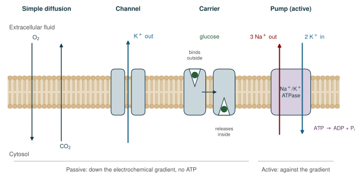
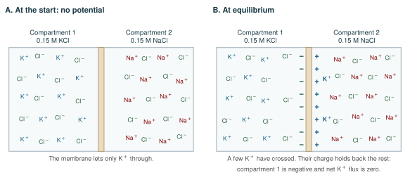
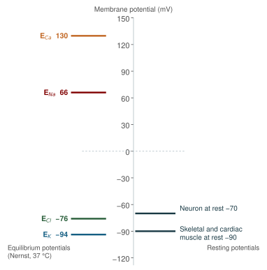
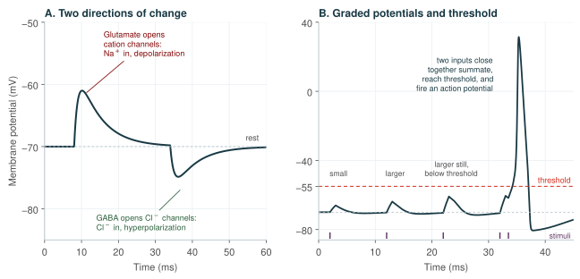
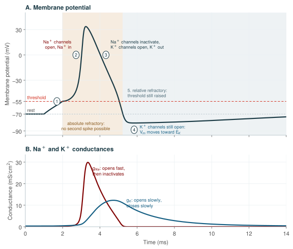
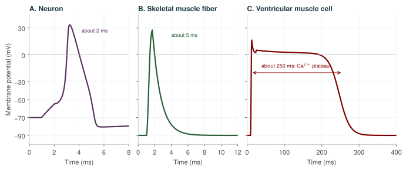
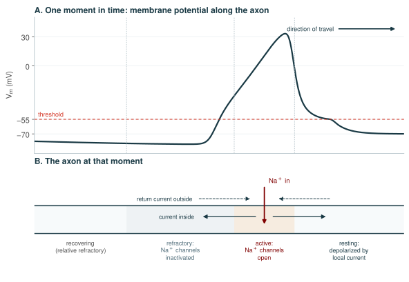

3 Membrane Potentials and Excitable Cells
Why the inside of a cell is negative, and how excitable cells use that to signal
- Describe the lipid bilayer and the ways molecules cross it: simple diffusion, channels, carriers and active transport.
- Explain how an ion gradient and a selectively permeable membrane create a membrane potential.
- Use the Nernst equation to find an ion’s equilibrium potential, and the Goldman-Hodgkin-Katz (GHK) equation to see why the resting potential sits near EK.
- Define depolarization, repolarization and hyperpolarization, and say which way a given channel moves the membrane potential.
- List the steps of the action potential (threshold, rising phase, falling phase, rebound hyperpolarization, refractory period) and the channels behind each.
- Explain how an action potential spreads along a cell and why it travels in one direction.
Ion concentrations and exact millivolt values are context. What you need is the direction each ion moves and why. You should be able to use the 61 mV log10 form of the Nernst equation for a single ion. You do not need the GHK arithmetic.
Every lecture in the muscle block, and the autonomic lecture after it, assumes you know what a membrane potential is and how a cell changes it. A skeletal muscle fiber contracts because an action potential reaches it. A heart cell’s plateau, a pacemaker’s slow drift toward threshold and a smooth muscle cell’s response to norepinephrine are all changes in membrane potential made by opening or closing particular channels. This chapter builds that foundation in the order the lecture does: the membrane, the resting potential and how to calculate it, how the potential changes, and the action potential.
3.1 The cell membrane
The plasma membrane is a lipid bilayer. Each phospholipid has a polar head group that faces water and two nonpolar hydrocarbon tails. The tails of the two layers face each other, so the middle of the membrane is a thin oily sheet with no charge.
That oily core decides what can cross on its own. Small nonpolar molecules (O2, CO2, and lipid-soluble substances such as benzene) dissolve in it and diffuse straight through. Water crosses slowly. Ions, glucose, amino acids and proteins cannot cross without help: an ion carries a charge and a shell of water molecules, and moving it into a nonpolar layer costs far too much energy. So the membrane is a barrier to charge, and that is what lets it hold a voltage.
3.1.1 How molecules cross
Figure 3.1 shows the four routes the lecture covers.

- Simple diffusion through the lipid, for small nonpolar molecules.
- Channel-mediated diffusion. A channel is a protein with a water-filled pore that lets particular ions through, down their gradient.
- Carrier-mediated transport. A carrier binds its cargo on one side, changes shape, and releases it on the other. The carrier is highly specific, and if it simply moves its cargo down a gradient it needs no ATP (glucose entering most cells works this way).
- Active transport. A pump uses energy from ATP to move ions against their gradients. The one that matters most here is the Na+/K+ ATPase, which moves 3 Na+ out of the cell and 2 K+ in for each ATP it splits.
The first three are passive: they only let substances move down the gradient that already exists. The pump is what makes the gradients in the first place and keeps them there.
3.1.2 Channels are selective
A K+ channel lets K+ through and keeps Na+ out, even though Na+ is the smaller ion:
| Ion | Radius (Å) |
|---|---|
| Li+ | 0.60 |
| Na+ | 0.95 |
| K+ | 1.33 |
| Rb+ | 1.48 |
So selectivity cannot be a matter of size alone. Channels select by:
- Size and shape of the narrowest part of the pore, the selectivity filter.
- Charge. Charged amino acids lining the pore attract ions of the opposite charge and repel ions of the same charge, so cation channels exclude anions.
- Hydration energy. In water each ion is wrapped in a shell of water molecules, and a small ion holds its shell more tightly than a large one, because its charge is concentrated in a smaller space. To pass through a narrow filter an ion has to shed some of that water, and the channel has to pay the energy back by letting the ion bind to oxygen atoms lining the pore. The K+ channel’s filter is the right size for those oxygens to sit where the water molecules around a K+ ion would sit. Na+ is too small to touch all of them, so it cannot make up the energy of losing its tightly held water, and it stays out.
The ion-radius table on the slides lists Rb+ as 2.48 Å. The radius of Rb+ is about 1.48 Å. The point of the table is unchanged: the radii rise from Li+ to Rb+, and the channel that passes K+ excludes the smaller Na+.
3.1.3 Channels are gated
Most channels open and close, which is called gating. The lecture lists these kinds of gate:
- Ligand-gated channels open when a molecule binds them. The nicotinic acetylcholine receptor at the neuromuscular junction is one (see Skeletal Muscle).
- Voltage-gated channels open or close when the membrane potential changes. These make the action potential.
- Thermally gated channels respond to temperature, as in temperature-sensing nerve endings.
- Mechanically gated channels open when the membrane is stretched or deformed, as in touch receptors and the stretch-activated channels of smooth muscle.
Some channels have no gate and stay open. The K+ “leak” channels that are open at rest are the most important of these.
3.2 Membrane potentials
The membrane potential (Vm) is the difference in electrical potential across the membrane. In this course it is always given as the inside relative to the outside, so “−70 mV” means the inside is 70 mV negative to the outside.
It is stored energy: it pushes cations into the cell and anions out, and the cell uses that push to move ions and to drive transporters. And it is a signal: neurons, muscle cells and some secretory cells communicate by changing it.
3.2.1 How a potential is generated
The lecture builds the idea in two compartments (Figure 3.2). Compartment 1 holds 0.15 M KCl and compartment 2 holds 0.15 M NaCl. Each side is electrically neutral. The membrane between them lets only K+ through.

K+ is much more concentrated in compartment 1, so it starts to diffuse into compartment 2. Cl− cannot follow. Each K+ that crosses carries a positive charge away and leaves a negative charge behind, so compartment 1 becomes negative. Now two forces act on K+:
- the concentration (chemical) gradient, pushing K+ from compartment 1 to compartment 2, and
- the electrical gradient, pulling the positive K+ back toward the negative compartment 1.
As more K+ crosses, the electrical force grows until it exactly balances the chemical force. Net K+ movement stops. The voltage at which that happens is the equilibrium potential for K+, EK. The two forces together are the electrochemical gradient, and at the equilibrium potential it is zero for that ion.
Very few ions have to move. In a cell about 10 µm across, only about one K+ in tens of thousands crosses to set up the potential, so the concentrations inside and outside do not measurably change. And the separated charge sits in a thin layer right against the two faces of the membrane. The bulk solution on each side stays neutral.
A cell works the same way. Compartment 1 is the cytosol, rich in K+, and compartment 2 is the extracellular fluid, rich in Na+. At rest the membrane is far more permeable to K+ than to anything else, through K+ leak channels, so K+ leaves, the inside becomes negative, and the resting potential sits close to EK.
3.2.2 Measuring it
The membrane potential is measured with a fine glass microelectrode filled with salt solution and pushed through the membrane, compared with a reference electrode in the extracellular fluid. As the tip enters the cell the reading drops from 0 to the resting potential, about −70 mV in a neuron and about −90 mV in skeletal and cardiac muscle cells.
3.3 Calculating membrane potentials
3.3.1 The Nernst equation: one ion
The Nernst equation gives the equilibrium potential for one ion: the voltage at which the electrical work of moving that ion across the membrane exactly balances the chemical work of moving it down its concentration gradient. You do not need to know the derivation.
\[E_X = \frac{RT}{zF}\ln\frac{[X]_o}{[X]_i}\]
R is the gas constant, T the absolute temperature, F Faraday’s constant, z the charge on the ion including its sign (+1 for K+ and Na+, +2 for Ca2+, −1 for Cl−), and [X]o and [X]i the concentrations outside and inside. At body temperature RT/F is about 26.7 mV. Switching to base-10 logarithms multiplies the constant by 2.303, and the equation becomes
\[E_X = \frac{61\ \text{mV}}{z}\log_{10}\frac{[X]_o}{[X]_i} \quad \text{at } 37\ ^\circ\text{C}\]
At room temperature the constant is about 58 to 59 mV. A tenfold concentration gradient of a monovalent cation gives an equilibrium potential 61 mV in size at body temperature, negative inside if the ion is more concentrated inside.
The slides and the notes write EX = 61 ln([X]o/[X]i) (and 59 ln at room temperature). The 61 mV constant goes with log10, not the natural log. With ln the constant is RT/F, about 26.7 mV. Using 61 with ln gives potentials 2.3 times too large: for K+ it would give about −216 mV instead of −94 mV. The slide’s key also defines z as the number of electrons transferred. In the Nernst equation z is the charge on the ion.
Using typical concentrations for a mammalian cell (these come from the 2018 course notes):
| Ion | Outside (mM) | Inside (mM) | Equilibrium potential (37 °C) |
|---|---|---|---|
| K+ | 4.5 | 155 | EK = 61 log(4.5/155) ≈ −94 mV |
| Na+ | 145 | 12 | ENa = 61 log(145/12) ≈ +66 mV |
| Cl− | 123 | 5 to 25 (7 used here) | ECl = −61 log(123/7) ≈ −76 mV |
| Ca2+ | 1.8 | about 0.0001 (100 nM) | ECa = 30.5 log(1.8/0.0001) ≈ +130 mV |
Read each equilibrium potential as the voltage that ion is “trying” to bring the membrane to (Figure 3.3). When channels for an ion open, that ion flows in the direction that moves Vm toward its equilibrium potential. At −70 mV, opening Na+ or Ca2+ channels lets positive charge in and depolarizes the cell. Opening K+ channels lets K+ out and moves Vm toward −94 mV.

The driving force on an ion is the difference between where the membrane is and where that ion’s equilibrium potential is, Vm − EX. At rest the driving force on Na+ is huge (−70 − 66 = −136 mV, inward), and on K+ it is small (−70 − (−94) = +24 mV, outward). Only the small Na+ leak, driven by that large inward force, keeps the resting cell from going all the way to EK.
3.3.2 The Goldman-Hodgkin-Katz equation: several ions at once
A real membrane is permeable to more than one ion, so the resting potential is not any single equilibrium potential. The GHK equation combines them, weighting each ion’s concentrations by its permeability (P):
\[V_m = \frac{RT}{F}\ln\frac{P_K[K^+]_o + P_{Na}[Na^+]_o + P_{Cl}[Cl^-]_i}{P_K[K^+]_i + P_{Na}[Na^+]_i + P_{Cl}[Cl^-]_o}\]
Cl− appears upside down (inside on top, outside on the bottom) because it carries a negative charge. That flip is the only trick in the equation.
The meaning is simpler than the formula: the membrane potential sits nearest the equilibrium potential of the ion the membrane is most permeable to. If only one P is large, the GHK equation collapses into the Nernst equation for that ion.
Permeability ratios were first measured in the squid giant axon: at rest, PK : PNa : PCl is about 1 : 0.04 : 0.45. Borrowing those ratios and using the mammalian concentrations in the table, the GHK equation gives about −73 mV, close to the −70 mV of a neuron. During an action potential PNa rises far above PK, and Vm swings toward ENa. Nothing about the concentrations changed. Only the permeabilities did. That is the whole basis of electrical signaling: cells change their membrane potential by opening and closing channels.
Muscle cells rest nearer −90 mV than neurons do because their resting Na+ permeability is even smaller relative to K+ (in heart and skeletal muscle, inward-rectifier K+ channels carry the resting K+ current).
3.3.3 What the pump does
The Na+/K+ ATPase does not make the resting potential directly in any large way. Because it moves 3 Na+ out for 2 K+ in, it pushes out one net positive charge per cycle and adds a few millivolts of extra negativity. Its main job is to keep the gradients. At rest Na+ leaks in and K+ leaks out all the time, and without the pump the gradients would slowly run down and the resting potential with them. So the resting potential needs both kinds of transport: the pump to build the gradients, and the open K+ channels to turn the K+ gradient into a voltage.
“More K+ inside the cell makes the inside more positive.” It does the opposite. The inside is negative because K+ leaves. What sets the resting potential is the K+ gradient, [K+]o/[K+]i. A bigger gradient (more K+ inside or less outside) makes EK, and the resting potential, more negative. A smaller gradient, as when extracellular K+ rises, makes them less negative.
Extracellular K+. Because the resting membrane is mostly a K+ electrode, its potential is very sensitive to the K+ outside the cell, which is small and can change. Doubling extracellular K+ from 4.5 to 9 mM moves EK from about −94 to −75 mV, and the GHK resting potential from about −73 to −65 mV: the cell is partly depolarized. Raising intracellular K+ by the same amount would barely matter, because 4.5 mM more on top of 155 mM hardly changes the ratio. This is why high plasma K+ (hyperkalemia) is dangerous for the heart. The ECG chapters follow what partial depolarization does to cardiac action potentials (EKG I: Ionic Basis).
3.4 Changes in membrane potential
The membrane potential is not static. The lecture uses three words, always with the inside of the cell as the frame of reference:
- Depolarization: the membrane potential becomes less negative (moves toward zero, or past it).
- Repolarization: it returns toward the resting potential after a depolarization.
- Hyperpolarization: it becomes more negative than rest.
The lecture’s examples are two transmitters that open ligand-gated channels on a neuron (Figure 3.4 A).
- Glutamate opens cation channels. At −70 mV the driving force on Na+ is large and inward, so Na+ enters and the cell depolarizes.
- GABA opens Cl− channels. When ECl is more negative than the membrane potential (here −76 versus −70 mV), Cl− enters, negative charge builds inside, and the cell hyperpolarizes.
The rule behind both is the one from the Nernst section: an open channel pulls Vm toward the equilibrium potential of the ion it passes.

These local changes are graded: a bigger stimulus opens more channels and gives a bigger change. They also fade, in time as the charge leaks back out through resting channels, and with distance as current spreads along the cell. Two of them that overlap in time can add together, which is called summation (Figure 3.4 B). If the sum reaches threshold, the cell fires an action potential.
3.5 Excitable cells and the action potential
An excitable cell is a cell that can generate an action potential. The course covers four: neurons, skeletal muscle, cardiac muscle and smooth muscle.
An action potential is a rapid, transient change in membrane potential. In outline:
- A stimulus depolarizes the membrane.
- If it reaches threshold, voltage-gated channels open.
- A rapid, self-limited influx of positive ions depolarizes the cell.
- An efflux of positive ions repolarizes it.
3.5.1 The steps
Figure 3.5 follows a neuron’s action potential through the five steps on the lecture slides.

1. Reaching threshold. A stimulus depolarizes the membrane. Depolarization opens some voltage-gated Na+ channels, Na+ enters, and that depolarizes the membrane further. Below threshold, the outward K+ leak wins and the membrane falls back to rest. At threshold (about −55 mV in a neuron), the Na+ entering just outruns the K+ leaving, and the process feeds itself.
2. Rising phase. Now positive feedback takes over: depolarization opens Na+ channels, Na+ entry depolarizes the membrane further, which opens more Na+ channels. PNa jumps far above PK, and the membrane potential races toward ENa. It overshoots zero, but it never quite reaches ENa, because K+ is still leaving.
3. Falling phase. Within about a millisecond the Na+ channels inactivate: a separate inactivation gate plugs the pore, so they close even though the membrane is still depolarized. At the same time the voltage-gated K+ channels, which open more slowly than Na+ channels, are now open. K+ leaves and repolarizes the cell.
4. Rebound hyperpolarization. The voltage-gated K+ channels also close slowly, so for a few milliseconds PK is higher than at rest and the membrane dips below the resting potential, toward EK. The notes call this the after-hyperpolarization.
5. Refractory period. An inactivated Na+ channel cannot be opened again by depolarization. It has to return to the closed state first, and it only does that once the membrane has repolarized. The Na+ channel therefore has three states:
| State | Activation gate | Inactivation gate | Can depolarization open it? |
|---|---|---|---|
| Closed (resting) | shut | open | yes |
| Open | open | open | (already open) |
| Inactivated | open | shut | no, until the membrane repolarizes |
During the absolute refractory period, from the upstroke through repolarization, so many Na+ channels are inactivated that no stimulus, however large, can fire a second action potential. During the relative refractory period that follows, enough Na+ channels have recovered to fire one, but some are still inactivated and extra K+ channels are still open, so it takes a stronger-than-normal stimulus. The refractory period limits how often a cell can fire and keeps an action potential moving forward (below).
The voltage-gated K+ channel in this picture has only two states, closed and open. It opens and closes slowly, but it does not inactivate.
3.5.2 All or none
An action potential is an all-or-none event. A stimulus that does not reach threshold produces only a graded potential that fades. Any stimulus that does reach threshold produces a full action potential, and a bigger stimulus does not make a bigger one. The size and shape come from the cell’s channels, not from the stimulus. Cells signal “more” by firing more often, not by firing larger spikes.
The notes say that once threshold is reached “every channel in that region participates.” Not every channel opens. What is all-or-none is the event: once the positive feedback starts, the spike runs to its full size no matter how strong the stimulus was.
3.5.3 Different cells, different action potentials
Action potentials come from time- and voltage-dependent changes in ionic permeability, and different excitable cells have different channels, so their action potentials look different (Figure 3.6).

- A neuron’s action potential lasts about 2 ms.
- A skeletal muscle fiber’s lasts a few milliseconds and starts from about −90 mV. It is over long before the muscle reaches peak force, which matters for tetanus (Skeletal Muscle).
- A ventricular muscle cell’s (a fast-response action potential) lasts about 250 ms. After a fast Na+ upstroke, L-type Ca2+ channels open and Ca2+ entry balances K+ exit for a long plateau. The plateau keeps the cell refractory until the contraction is nearly over, which is why heart muscle cannot be tetanized. The Cardiac Muscle chapter and EKG I: Ionic Basis cover its phases (0 to 4) and currents.
Not every excitable cell uses Na+ for its upstroke. Cardiac pacemaker cells in the SA and AV nodes have slow-response action potentials whose upstroke is carried by L-type Ca2+ channels, and most smooth muscle also depends on Ca2+ entry.
Applying the neuron’s rules to every cell. A Na+ channel blocker slows the upstroke and the conduction of action potentials in cells that depend on Na+ channels (neurons, skeletal muscle, atrial and ventricular muscle, Purkinje fibers). It does not slow the SA node, so it does not slow the heart rate, and AV nodal conduction depends on the L-type Ca2+ current, not on Na+ channels. Before predicting what a drug or an ion change does, ask which channel carries the upstroke in that cell.
3.6 How the action potential spreads
An action potential starts at one spot and has to travel along the cell. It does this by local current (Figure 3.7).

Where the membrane is firing, Na+ pours in and the inside becomes positive. That charge spreads along the inside of the cell to the neighboring membrane, which is still at rest, and returns through the extracellular fluid, completing a local circuit. The current depolarizes the neighboring membrane. When that membrane reaches threshold, its own Na+ channels open and it fires, and then it depolarizes the next patch. Each patch regenerates the full action potential, so the signal does not fade with distance the way a graded potential does.
The current spreads backward as well as forward. The membrane just behind has fired a moment earlier and its Na+ channels are inactivated, so it is refractory and cannot fire again. That is why an action potential travels in one direction, away from where it started.
Between cells the same local currents can pass through gap junctions: channels that connect the cytoplasm of neighboring cells. Heart muscle cells and single-unit smooth muscle cells are linked this way, so an action potential in one cell spreads to the next and the tissue contracts together. Skeletal muscle fibers are not coupled. Each fiber is fired by its own motor nerve ending.
The 2026 lecture does not cover this. The autonomic and smooth muscle lectures build on it.
- Ligand-gated ion channels (also called ionotropic receptors) are themselves channels. The transmitter binds, the channel opens, and the membrane potential changes within a millisecond. Examples: the nicotinic acetylcholine receptor at the neuromuscular junction and on autonomic ganglion cells, and the glutamate and GABA receptors above.
- G protein-coupled receptors are not channels. The ligand changes the receptor’s shape, the receptor activates a G protein on the inside of the membrane, and the G protein changes an enzyme or a channel. The response is slower, and it is amplified, because one receptor activates many G proteins and each enzyme makes many second-messenger molecules. Adrenergic and muscarinic receptors are G protein-coupled.
The Smooth Muscle and ANS and Extrinsic Control chapters show which G protein each adrenergic and muscarinic receptor uses.
3.7 Check your understanding
A membrane separates 100 mM KCl (side 1) from 10 mM KCl (side 2) at 37 °C and is permeable only to K+. Which side becomes negative, and by how much?
Answer
K+ diffuses from side 1 to side 2, leaving Cl− behind, so side 1 becomes negative. With side 1 as “inside,” EK = 61 log(10/100) = −61 mV. If you used the slide’s form of the equation, 61 × ln(0.1), you would get −140 mV: 61 goes with log10.
Why is a neuron’s resting potential (−70 mV) close to EK (−94 mV) and far from ENa (+66 mV), and why is it not exactly at EK?
Answer
At rest the membrane is far more permeable to K+ than to Na+ (about 25 to 1), and the GHK equation weights each ion by its permeability, so Vm sits near EK. A small Na+ permeability remains, and Na+ has a large inward driving force, so the trickle of Na+ in pulls Vm a little positive of EK. The pump keeps the gradients from running down.
Extracellular K+ rises from 4.5 to 7 mM, with intracellular K+ at 155 mM. Calculate the new EK. The resting potential moves from about −73 to about −68 mV. Why does Vm move less than EK does?
Answer
EK = 61 log(7/155) ≈ −82 mV, so EK moves about 12 mV, from −94 to −82. The resting potential moves only about 5 mV. Vm is a permeability-weighted balance of all the ions the membrane passes, not EK itself. K+ has by far the largest permeability, so Vm moves the same way as EK, but the Na+ and Cl− terms in the GHK equation have not changed, and they hold Vm back from following the whole way. A cell whose resting Na+ permeability is even smaller relative to K+, such as a muscle cell resting near −90 mV, follows EK more closely.
In the heart, acetylcholine from the vagus nerve opens extra K+ channels in SA node cells. Which way does K+ move, and which way does the membrane potential change?
Answer
An open channel pulls Vm toward the equilibrium potential of the ion it passes. SA node cells sit well positive of EK, so K+ leaves the cell, positive charge is lost from the inside, and Vm moves toward EK: the cell hyperpolarizes. Starting each cycle from a more negative potential is one way acetylcholine slows the heart (ANS and Extrinsic Control).
A drug removes the Na+ channel’s inactivation gate, so the channels stay open as long as the membrane is depolarized. Which phases of the action potential change?
Answer
The rising phase is unchanged, because it depends on activation. The falling phase is slowed or lost, because Na+ inactivation is one of the two things that end the spike, so the cell stays depolarized much longer, held up by continued Na+ entry against the K+ current. Inactivation is also what makes the membrane behind a moving action potential refractory, so that protection would be lost as well.
The neuromuscular junction sits near the middle of a skeletal muscle fiber. Why does the fiber’s action potential travel toward both ends, and why does neither wave turn back?
Answer
Local current spreads both ways from the active membrane at the end plate. Membrane on both sides is at rest and can be brought to threshold, so two action potentials leave in opposite directions, one toward each end. Once each wave is moving, the membrane behind it has just fired and its Na+ channels are inactivated, so it is refractory. Only the membrane ahead can fire, and the waves stop when they reach the ends of the fiber.
3.8 Key equations
| Equation | Use |
|---|---|
| EX = (RT/zF) ln([X]o/[X]i) = (61 mV/z) log10([X]o/[X]i) at 37 °C | Equilibrium potential of one ion (Nernst) |
| Vm = (RT/F) ln[(PK[K+]o + PNa[Na+]o + PCl[Cl−]i)/(PK[K+]i + PNa[Na+]i + PCl[Cl−]o)] | Membrane potential with several permeable ions (GHK) |
| Driving force = Vm − EX | Which way an ion moves when its channels open |
3.9 Sources
This chapter follows the 2026 Membrane Potentials and Excitable Cells lecture for MEDC 30504 and draws on the peer-educator notes and the 2018 course notes, corrected and updated. All figures were drawn for this book.